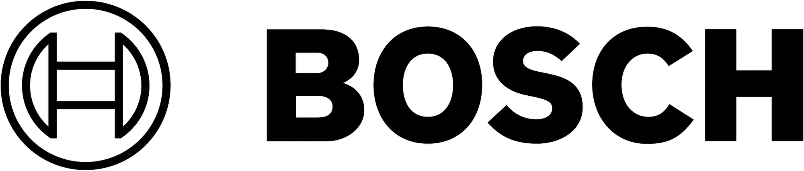
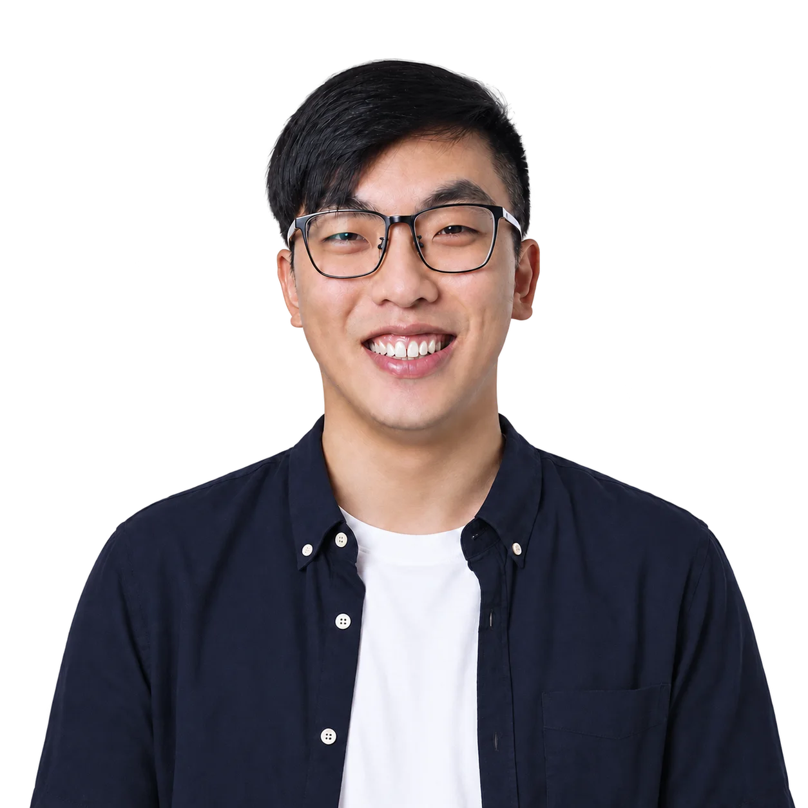
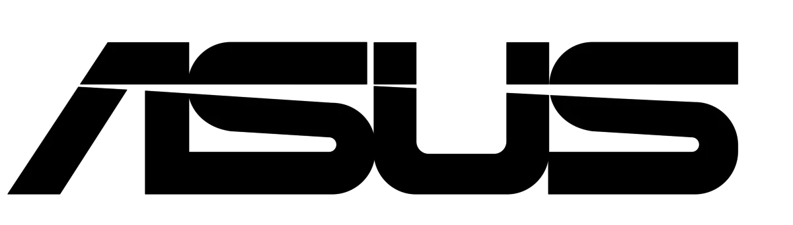
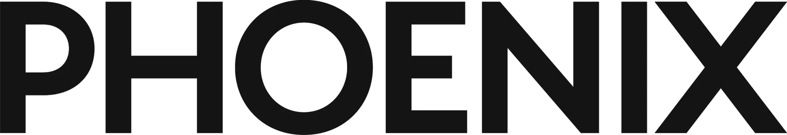

Industrial Designer
Designed and developed power tools for European, global and professional industrial users. Focused on user-centred industrial design, advanced 3D modelling and design feasibility.

I am an industrial designer with international experience across Sweden, Germany, the UK and China. With a strong foundation in engineering and aesthetics, I specialise in bridging cutting-edge technology and user-centred design. My recent roles at ASUS and Phoenix Design have allowed me to lead high-performance product strategies, from gaming and creator laptops to AI-integrated systems. I thrive in cross-disciplinary teams and am passionate about shaping products that are both functional and visionary.

Designed and developed power tools for European, global and professional industrial users. Focused on user-centred industrial design, advanced 3D modelling and design feasibility.

Led industrial design for ROG and ProArt product lines, including gaming laptops and creator devices. Delivered CMF strategies and managed 3D development for flagship products.

Developed long-term design language and AI-integrated concepts; aligned outcomes with UX/UI, thermal, mechanical engineering and marketing teams.
Conducted a thesis focused on future lifestyle scenarios and circular design systems, integrating speculative design, foresight mapping and user-centred methods.

Supported industrial-design development across future-oriented product and service concepts.
Developed an early foundation in industrial product development and collaborative design practice.
Supported mechanical engineering and thermal testing for EV battery modules; built CAD models and prepared design-validation documentation using Creo and SolidWorks.
Focused on human-centred design, sustainability and speculative design practices. Courses covered advanced design methodology, design research and system thinking; developed multiple projects with industry partners and public institutions.
First Class Honours. An interdisciplinary programme combining mechanical engineering with product aesthetics. Training included CAD, manufacturing technologies, ergonomics and material science; final-year work explored modular electronics and production optimisation.